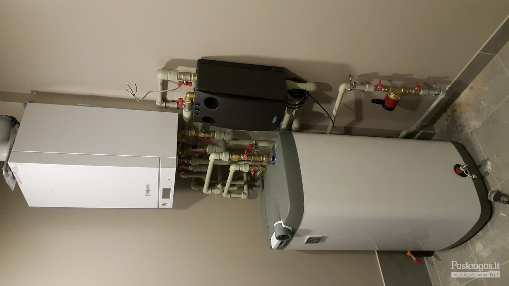

Santechnikos centras
 Laisvės pr. 82, Vilnius +370 5 234 55 69 ... Kontaktai 0 prekė(s) - 0.00 €Jūsų prekių krepšelis tuščias
Mano paskyra Registruotis PrisijungtiVisos kategorijos
Visos kategorijos Biologiniai nuotekų valymo įrenginiai Buitiniai nuotekų valymo įrenginiai Naftos produktų gaudyklės Pramoniniai nuotekų valymo įrenginiai Riebalų gaudyklės Smėliagaudės Priedai valymo įrenginiams Įrankiai Dažymo įrankiai Gręžimo įrankiai Grąžtai Karpymo įrankiai Lankstymo įrankiai Matavimo įrankiai Pjaustymo įrankiai Presavimo ir kalibravimo įrankiai Rankiniai įrankiai Santechniniai įrankiai Slėgio ir sandarumo tikrinimo įrankiai Sriegimo įrankiai Priedai sriegimui Vamzdžių ir jungčių suvirinimo įrankiai Vyniojimo prietaisai Ženklai (lipdukai), kortelės Draudžiamieji ir įspėjamieji Energetika Evakuaciniai ženklai Gaisrinė sauga Įpareigojamieji ženklai Patalpų kategorijos Požeminės komunikacijos Skaičiai, numeracija, juostos, kūgiai Vamzdynų ženklinimas Židiniai, krosnelės, pirtys Krosnelės Akumuliacinės Granulinės Ketinės Plieninės Pirties krosnelės Židiniai Ketiniai Plieniniai Židiniai-krosnelės Židinio įrankiai ir aksesuarai Vonios kambario ir virtuvės įranga Bidė Pakabinamos bidė Pastatomos bidė Atsarginės dalys Chromuoti vamzdeliai, ventiliai, jungtys Dušo įranga Dušo durys, sienelės Dušo kabinos Dušo latakai Dušo padėklai Hidromasažinės dušo sistemos Dušo stovai Dušo trapai Dušo žarnelės Dušo galvutės Dušo galvučių laikikliai Dušo komplektai Dušo sėdynės - kėdutės Stacionarios dušo galvos ir laikikliai Potinkinės sistemos Virštinkinės sistemos Priedai dušo įrangai Įranga neįgaliesiems Atramos, laikikliai Pisuarai Potinkinės sistemos Rėmai bidė Rėmai pisuarui Rėmai praustuvui Rėmai unitazui (WC) Rėmų ir WC komplektai Mygtukai potinkiniams rėmams Atsarginės dalys Praustuvai Baldiniai - pakabinami Pastatomi ant stalviršio (dubuo) Montuojami iš apačios Įleidžiami į stalviršį Laisvai pastatomas Priedai praustuvams Rankšluosčių džiovintuvai - kopėtėlės Elektriniai Nerūdijančio plieno - žalvariniai Kombinuoti Kaitinimo elementai (tenai) Pajungimo mazgai Priedai rankšluosčių džiovintuvams - kopėtėlėms Santechninės žarnelės Žarnelės vandeniui Žarnelės dujoms Nerūdijančio plieno žarnelės Skalbimo mašinos pajungimui Sifonai, WC jungtys, apdailos prekės Sifonai dušo latakui Sifonai pisuarui Sifonai bidė Sifonai voniai Sifonai praustuvui Sifonai dušo padėklui Sifonai plautuvei ir skalbimo mašinai Sifonų ventiliai Nuotekų vožtuvai WC jungtys, apdailos prekės Unitazai Pastatomi unitazai Pakabinami unitazai Unitazo dangčiai Atsarginės dalys, priedai Vandens maišytuvai Bidė Bidete dušeliai Dušui Grindiniai maišytuvai Potinkiniai Praustuvui Praustuvui (sieniniai-potinkiniai) Termostatiniai Virtuviniai (plautuvei) Voniai Atsarginės dalys Virtuvės įranga Plautuvės Šiukšlių rūšiavimo sistemos Vonios ir sienelės Stačiakampės Kampinės Asimetriškos Laisvai stovinčios Įleidžiamos Vonios sienelės Priedai voniai Vonios kambario aksesuarai ir priežiūra Krepšeliai, lentynėlės Laikikliai tualetiniam popieriui Muilo dozatoriai, muilinės Rankšluosčių laikikliai, kabliukai Stiklinaitės Tualeto šepečiai Priežiūros priemonės Vonios kambario baldai Vonios baldų komplektai Praustuvo spintelės Veidrodžiai Atsinaujinančios energijos įranga Saulės kolektoriai Komplektuojančios ir kitos dalys Plokštieji Vakuuminiai Šilumos siurbliai Komplektuojančios ir kitos dalys Oras - oras šilumos siurbliai Oras - vanduo šilumos siurbliai Šilumos siurblių šildytuvai Žemė - vanduo šilumos siurbliai Katilinių įranga Radiatoriai Plieniniai - profiliuoti Aliuminiai Elektriniai Ketiniai Tepaliniai Priedai radiatoriams Akumuliacinės talpos Dujiniai katilai Kondensaciniai katilai Priedai dujiniams katilams Elektriniai katilai Išsiplėtimo indai Šildymo sistemoms Vandentiekio sistemoms Priedai Kaloriferiai Katilai - viryklės Kieto kuro katilai Ketiniai kieto kuro katilai Plieniniai kieto kuro katilai Kolektoriai, kolektorinės spintelės Kolektoriai grindiniam šildymui Kolektoriai radiatoriniam šildymui Kolektoriai vandentiekiui Pamaišymo mazgai Priedai kolektoriams Kolektorinės spintelės Kuras Granulės Šilumokaičiai Siurbliai ir hidroforai Benzininiai siurbliai Giluminiai siurbliai Cirkuliaciniai siurbliai Hidroforai Vandens sistemos Drenažiniai siurbliai Panardinami siurbliai šuliniams Priedai siurbliams Skysto kuro katilai, degikliai, talpos Vandens šildytuvai (boileriai) Elektriniai vandens šildytuvai Kombinuoti vandens šildytuvai Greitaeigiai vandens šildytuvai Atsarginės dalys Granuliniai katilai Plieniniai granuliniai katilai Priedai granuliniams katilams Dūmtraukiai ir kaminai Dūmtraukiai židiniams ir krosnelėms Juodo plieno vamzdžiai ir jungtys Įdėklai į kaminus Apvalūs Lankstūs Ovalūs Moduliniai kaminai Matavimo ir reguliavimo prietaisai Automatinio balansavimo ventiliai Grindų šildymo automatika Belaidė valdymo sistema Laidinė valdymo sistema Kiti matavimo ir reguliavimo prietaisai Apsauginiai ir kiti vožtuvai Automatiniai nuorintojai, purvo ir magnetito sepatatoriai Kontaktiniai termostatai, katilo apsaugos grupės Manometrai, termometrai Slėgio keitikliai, rėlės Rankinio balansavimo ventiliai Skaitikliai Termostatinės galvutės, termostatai Radiatorių mazgai, kryžmės Termostatinės galvutės Termostatai radiatoriams Uždarymo ventiliai Termostatiniai vožtuvai Pamaišymo (rotaciniai) vožtuvai Krovimo vožtuvai Vidaus vamzdynai ir jungtys Daugiasluoksniai vamzdžiai ir jungtys Daugiasluoksniai vamzdžiai Presuojamos jungtys PUSH jungtys Užveržiamos jungtys Ašinio presavimo jungtys Priedai Gebo užveržiamos jungtys Gofr. nerūdijančio plieno vamzdžiai ir jungtys Grindinio šildymo vamzdžiai ir jungtys Grindinio šildymo vamzdžiai Sauso tipo grindinis šildymas Šlapio tipo grindinis šildymas Elektrinis grindų šildymas Priedai grindiniam šildymui Ketinės srieginės jungtys Juodos jungtys Cinkuotos jungtys Mažatriukšmiai nuotekų vamzdžiai ir jungtys Mažatriukšmiai nuotekų vamzdžiai Mažatriukšmės nuotekų sistemos jungtys Plieniniai vamzdžiai, profiliai, lakštai, jungtys Plieniniai sriegiai Plieniniai vamzdžiai, profiliai PP-R lituojami vamzdžiai ir jungtys PP-R lituojami vamzdžiai PP-R lituojamos jungtys Presuojamo plieno vamzdžiai ir jungtys Šildymo sistemoms Vandentiekio sistemoms Dujotiekio sistemoms Variniai vamzdžiai ir jungtys Variniai vamzdžiai Užveržiamos jungtys Priedai litavimui Vidaus nuotekų vamzdžiai ir jungtys Vidaus nuotekų vamzdžiai Vidaus nuotekų jungtys Priedai vidaus kanalizacijai Žalvarinės, chromuotos ir nikeliuotos srieginės jungtys Žalvarinės srieginės jungtys Chromuotos srieginės jungtys Nikeliuotos srieginės jungtys Kalaus ketaus vamzdžiai, sklendės, jungtys Lauko vamzdynai ir jungtys Betoniniai šulinių elementai Gofruoti vamzdžiai, dangčiai, jungtys Gofruoti vamzdžiai Dangčiai Dugnai Priedai Gręžinių vamzdžiai, automatika, jungtys Instaliaciniai vamzdžiai kabeliams Izoliuoti vamzdžiai ir jungtys Latakai, trapai Lauko nuotekų vamzdžiai ir jungtys Lauko vamzdžiai Lauko jungtys Priedai lauko kanalizacijai Lietvamzdžiai PE slėgiminiai vamzdžiai ir jungtys PE slėgiminiai vamzdžiai Užveržiamos plastikinės jungtys PE vamzdžiui Užveržiamos žalvarinės jungtys PE vamzdžiui Elektra virinamos jungtys PE vamzdžiui PVC drenažo vamzdžiai ir jungtys Drenažo vamzdžiai Priedai drenažui Sodo laistymo vamzdžiai, įranga Laistymo žarnos Laistymo jungtys, vežymėliai Neužšąlantys lauko čiaupai Techniniai vamzdžiai Polietileno techniniai vamzdžiai Baseinų ir akvariumų įranga PVC-U slėgiminiai klijuojami vamzdžiai PVC-U slėgiminės klijuojamos jungtys Priedai Priešgaisrinė įranga Gesintuvai, nedegūs audeklai Nerūdijančio plieno gofruotos sprinklerinės žarnos Priešgaisrinės spintelės Priešgaisrinės žarnos ir antgaliai Antgaliai Švirkštai Ventiliai Žarnos Priešgaisriniai purkštukai - sprinkleriai Priešgaisriniai vožtuvai, stotelės, sklendės Vandens filtrai, drėgmės surinktuvai Drėgmės surinktuvai Du viename minkštinimas ir nugeliažinimas Mechaniniai filtrai Kasetiniai filtrai ir priedai Minkštinimo filtrai Nugeliažinimo filtrai Vandens filtrų priedai Izoliacinės medžiagos Kaučiukiniai kevalai, dembliai Kevalai Dembliai Priedai kaučiukiniai izoliacijai Priešgaisriniai dembliai, plokštės Dembliai Plokštės Pūsto polietileno kevalai, dembliai Kevalai Kevalai su apsaugine plėvele Dembliai Stiklo audiniai, siūlai, pluoštai Vatos kevalai, dembliai (Lamella) Vatos kevalai Dembliai - Lamella Vėdinimo ir kondicionavimo įranga Apvalių ortakių sistema Cinkuotos skardos ortakiai Ortakių jungtys Grotelės Difuzoriai Kondicionavimo įranga Lanksčių ortakių sistema Stačiakampių ortakių sistema Vėdinimo įranga Rekuperatoriai Uždaromoji armatūra Rutuliniai ventiliai Rutuliniai ventiliai vandeniui ir šildymui Rutuliniai ventiliai dujoms Privirinami rutuliniai ventiliai šildymui Privirinami rutuliniai ventiliai dujoms Sklendės kalaus ketaus Tarpflanšiniai uždoriai Žalvariniai atbuliniai vožtuvai, filtrai Neužšąlantys lauko čiaupai Aukšto slėgio plovimo įrenginiai Sandarinimo medžiagos ir apsauga nuo užšalimo Apsauga nuo užšalimo Distiliuotas vanduo Etilenglikolio skystis Propilenglikolio skystis Dažai, gruntas metalui Lininės pakulos, tefloninės juostelės, sandarinimo pastos Lipnios ir pakavimo juostos Montavimo putos, hermetikai Tarpinės, gumos ir paranito gaminiai Įvairios prekės Tvirtinimo detalės Grindinio šildymo tvirtinimai Kiti tvirtinimai Plastikiniai dirželiai - užtraukėjai Perforuoto profilio tvirtinimai Priešgaisriniai tvirtinimai Tvirtinimai izoliacijai Tvirtinimai sanitariniams prietaisams Ventiliacijos ir ortakių tvirtinimai Metaliniai vamzdžių tvirtinimai Plastikiniai vamzdžių tvirtinimai Darbo saugos priemonės Darbo rūbai Kitos apsaugos priemonės Kojų apsauga Rankų apsauga Aplietos pirštinės GUIDE pirštinės Guminės ir vienkartinės pirštinės Megztos pirštinės Odinės pirštinės Žieminės pirštinėsVisos kategorijos
Vonios kambario ir virtuvės įranga Bidė Pakabinamos bidė Pastatomos bidė Atsarginės dalys Chromuoti vamzdeliai, ventiliai, jungtys Dušo įranga Dušo durys, sienelės Dušo kabinos Dušo latakai Dušo padėklai Hidromasažinės dušo sistemos Dušo stovai Dušo trapai Dušo žarnelės Dušo galvutės Dušo galvučių laikikliai Dušo komplektai Dušo sėdynės - kėdutės Stacionarios dušo galvos ir laikikliai Potinkinės sistemos Virštinkinės sistemos Priedai dušo įrangai Įranga neįgaliesiems Atramos, laikikliai Pisuarai Potinkinės sistemos Rėmai bidė Rėmai pisuarui Rėmai praustuvui Rėmai unitazui (WC) Rėmų ir WC komplektai Mygtukai potinkiniams rėmams Atsarginės dalys Praustuvai Baldiniai - pakabinami Pastatomi ant stalviršio (dubuo) Montuojami iš apačios Įleidžiami į stalviršį Laisvai pastatomas Priedai praustuvams Rankšluosčių džiovintuvai - kopėtėlės Elektriniai Nerūdijančio plieno - žalvariniai Kombinuoti Kaitinimo elementai (tenai) Pajungimo mazgai Priedai rankšluosčių džiovintuvams - kopėtėlėms Santechninės žarnelės Žarnelės vandeniui Žarnelės dujoms Nerūdijančio plieno žarnelės Skalbimo mašinos pajungimui Sifonai, WC jungtys, apdailos prekės Sifonai dušo latakui Sifonai pisuarui Sifonai bidė Sifonai voniai Sifonai praustuvui Sifonai dušo padėklui Sifonai plautuvei ir skalbimo mašinai Sifonų ventiliai Nuotekų vožtuvai WC jungtys, apdailos prekės Unitazai Pastatomi unitazai Pakabinami unitazai Unitazo dangčiai Atsarginės dalys, priedai Vandens maišytuvai Bidė Bidete dušeliai Dušui Grindiniai maišytuvai Potinkiniai Praustuvui Praustuvui (sieniniai-potinkiniai) Termostatiniai Virtuviniai (plautuvei) Voniai Atsarginės dalys Virtuvės įranga Plautuvės Akmens masės Granitinės Keramikinės Nerūdijančio plieno Priedai plautuvėms Šiukšlių rūšiavimo sistemos Vonios ir sienelės Stačiakampės Kampinės Asimetriškos Laisvai stovinčios Įleidžiamos Vonios sienelės Priedai voniai Vonios kambario aksesuarai ir priežiūra Krepšeliai, lentynėlės Laikikliai tualetiniam popieriui Muilo dozatoriai, muilinės Rankšluosčių laikikliai, kabliukai Stiklinaitės Tualeto šepečiai Priežiūros priemonės Vonios kambario baldai Vonios baldų komplektai Praustuvo spintelės Veidrodžiai Atsinaujinančios energijos įranga Saulės kolektoriai Komplektuojančios ir kitos dalys Plokštieji Vakuuminiai Šilumos siurbliai Komplektuojančios ir kitos dalys Oras - oras šilumos siurbliai Oras - vanduo šilumos siurbliai Šilumos siurblių šildytuvai Žemė - vanduo šilumos siurbliai Katilinių įranga Radiatoriai Plieniniai - profiliuoti Aliuminiai Elektriniai Ketiniai Tepaliniai Priedai radiatoriams Akumuliacinės talpos Dujiniai katilai Kondensaciniai katilai Priedai dujiniams katilams Elektriniai katilai Išsiplėtimo indai Šildymo sistemoms Vandentiekio sistemoms Priedai Kaloriferiai Katilai - viryklės Kieto kuro katilai Ketiniai kieto kuro katilai Plieniniai kieto kuro katilai Kolektoriai, kolektorinės spintelės Kolektoriai grindiniam šildymui Kolektoriai radiatoriniam šildymui Kolektoriai vandentiekiui Pamaišymo mazgai Priedai kolektoriams Kolektorinės spintelės Kuras Granulės Šilumokaičiai Siurbliai ir hidroforai Benzininiai siurbliai Giluminiai siurbliai Cirkuliaciniai siurbliai Hidroforai Vandens sistemos Drenažiniai siurbliai Panardinami siurbliai šuliniams Priedai siurbliams Skysto kuro katilai, degikliai, talpos Vandens šildytuvai (boileriai) Elektriniai vandens šildytuvai Kombinuoti vandens šildytuvai Greitaeigiai vandens šildytuvai Atsarginės dalys Granuliniai katilai Plieniniai granuliniai katilai Priedai granuliniams katilams Židiniai, krosnelės, pirtys Krosnelės Akumuliacinės Granulinės Ketinės Plieninės Pirties krosnelės Židiniai Ketiniai Plieniniai Židiniai-krosnelės Židinio įrankiai ir aksesuarai Dūmtraukiai ir kaminai Dūmtraukiai židiniams ir krosnelėms Juodo plieno vamzdžiai ir jungtys Įdėklai į kaminus Apvalūs Lankstūs Ovalūs Moduliniai kaminai Matavimo ir reguliavimo prietaisai Automatinio balansavimo ventiliai Grindų šildymo automatika Belaidė valdymo sistema Laidinė valdymo sistema Kiti matavimo ir reguliavimo prietaisai Apsauginiai ir kiti vožtuvai Automatiniai nuorintojai, purvo ir magnetito sepatatoriai Kontaktiniai termostatai, katilo apsaugos grupės Manometrai, termometrai Slėgio keitikliai, rėlės Rankinio balansavimo ventiliai Skaitikliai Termostatinės galvutės, termostatai Radiatorių mazgai, kryžmės Termostatinės galvutės Termostatai radiatoriams Uždarymo ventiliai Termostatiniai vožtuvai Pamaišymo (rotaciniai) vožtuvai Krovimo vožtuvai Vidaus vamzdynai ir jungtys Daugiasluoksniai vamzdžiai ir jungtys Daugiasluoksniai vamzdžiai Presuojamos jungtys PUSH jungtys Užveržiamos jungtys Ašinio presavimo jungtys Priedai Gebo užveržiamos jungtys Gofr. nerūdijančio plieno vamzdžiai ir jungtys Grindinio šildymo vamzdžiai ir jungtys Grindinio šildymo vamzdžiai Sauso tipo grindinis šildymas Šlapio tipo grindinis šildymas Elektrinis grindų šildymas Priedai grindiniam šildymui Ketinės srieginės jungtys Juodos jungtys Cinkuotos jungtys Mažatriukšmiai nuotekų vamzdžiai ir jungtys Mažatriukšmiai nuotekų vamzdžiai Mažatriukšmės nuotekų sistemos jungtys Plieniniai vamzdžiai, profiliai, lakštai, jungtys Plieniniai sriegiai Plieniniai vamzdžiai, profiliai PP-R lituojami vamzdžiai ir jungtys PP-R lituojami vamzdžiai PP-R lituojamos jungtys Presuojamo plieno vamzdžiai ir jungtys Šildymo sistemoms Vandentiekio sistemoms Dujotiekio sistemoms Variniai vamzdžiai ir jungtys Variniai vamzdžiai Užveržiamos jungtys Priedai litavimui Vidaus nuotekų vamzdžiai ir jungtys Vidaus nuotekų vamzdžiai Vidaus nuotekų jungtys Priedai vidaus kanalizacijai Žalvarinės, chromuotos ir nikeliuotos srieginės jungtys Žalvarinės srieginės jungtys Chromuotos srieginės jungtys Nikeliuotos srieginės jungtys Kalaus ketaus vamzdžiai, sklendės, jungtys Biologiniai nuotekų valymo įrenginiai Buitiniai nuotekų valymo įrenginiai Naftos produktų gaudyklės Pramoniniai nuotekų valymo įrenginiai Riebalų gaudyklės Smėliagaudės Priedai valymo įrenginiams Lauko vamzdynai ir jungtys Betoniniai šulinių elementai Gofruoti vamzdžiai, dangčiai, jungtys Gofruoti vamzdžiai Dangčiai Dugnai Priedai Gręžinių vamzdžiai, automatika, jungtys Instaliaciniai vamzdžiai kabeliams Izoliuoti vamzdžiai ir jungtys Latakai, trapai Lauko nuotekų vamzdžiai ir jungtys Lauko vamzdžiai Lauko jungtys Priedai lauko kanalizacijai Lietvamzdžiai PE slėgiminiai vamzdžiai ir jungtys PE slėgiminiai vamzdžiai Užveržiamos plastikinės jungtys PE vamzdžiui Užveržiamos žalvarinės jungtys PE vamzdžiui Elektra virinamos jungtys PE vamzdžiui PVC drenažo vamzdžiai ir jungtys Drenažo vamzdžiai Priedai drenažui Sodo laistymo vamzdžiai, įranga Laistymo žarnos Laistymo jungtys, vežymėliai Neužšąlantys lauko čiaupai Techniniai vamzdžiai Polietileno techniniai vamzdžiai Baseinų ir akvariumų įranga PVC-U slėgiminiai klijuojami vamzdžiai PVC-U slėgiminės klijuojamos jungtys Priedai Vandens filtrai, drėgmės surinktuvai Drėgmės surinktuvai Du viename minkštinimas ir nugeliažinimas Mechaniniai filtrai Kasetiniai filtrai ir priedai Minkštinimo filtrai Nugeliažinimo filtrai Vandens filtrų priedai Izoliacinės medžiagos Kaučiukiniai kevalai, dembliai Kevalai Dembliai Priedai kaučiukiniai izoliacijai Priešgaisriniai dembliai, plokštės Dembliai Plokštės Pūsto polietileno kevalai, dembliai Kevalai Kevalai su apsaugine plėvele Dembliai Stiklo audiniai, siūlai, pluoštai Vatos kevalai, dembliai (Lamella) Vatos kevalai Dembliai - Lamella Vėdinimo ir kondicionavimo įranga Apvalių ortakių sistema Cinkuotos skardos ortakiai Ortakių jungtys Grotelės Difuzoriai Kondicionavimo įranga Lanksčių ortakių sistema Stačiakampių ortakių sistema Vėdinimo įranga Rekuperatoriai Priešgaisrinė įranga Gesintuvai, nedegūs audeklai Nerūdijančio plieno gofruotos sprinklerinės žarnos Priešgaisrinės spintelės Priešgaisrinės žarnos ir antgaliai Antgaliai Švirkštai Ventiliai Žarnos Priešgaisriniai purkštukai - sprinkleriai Priešgaisriniai vožtuvai, stotelės, sklendės Uždaromoji armatūra Rutuliniai ventiliai Rutuliniai ventiliai vandeniui ir šildymui Rutuliniai ventiliai dujoms Privirinami rutuliniai ventiliai šildymui Privirinami rutuliniai ventiliai dujoms Sklendės kalaus ketaus Tarpflanšiniai uždoriai Žalvariniai atbuliniai vožtuvai, filtrai Neužšąlantys lauko čiaupai Sandarinimo medžiagos ir apsauga nuo užšalimo Apsauga nuo užšalimo Distiliuotas vanduo Etilenglikolio skystis Propilenglikolio skystis Dažai, gruntas metalui Lininės pakulos, tefloninės juostelės, sandarinimo pastos Lipnios ir pakavimo juostos Montavimo putos, hermetikai Tarpinės, gumos ir paranito gaminiai Įvairios prekės Tvirtinimo detalės Grindinio šildymo tvirtinimai Kiti tvirtinimai Plastikiniai dirželiai - užtraukėjai Perforuoto profilio tvirtinimai Priešgaisriniai tvirtinimai Tvirtinimai izoliacijai Tvirtinimai sanitariniams prietaisams Ventiliacijos ir ortakių tvirtinimai Metaliniai vamzdžių tvirtinimai Plastikiniai vamzdžių tvirtinimai Įrankiai Dažymo įrankiai Gręžimo įrankiai Grąžtai Karpymo įrankiai Lankstymo įrankiai Matavimo įrankiai Pjaustymo įrankiai Presavimo ir kalibravimo įrankiai Rankiniai įrankiai Santechniniai įrankiai Slėgio ir sandarumo tikrinimo įrankiai Sriegimo įrankiai Priedai sriegimui Vamzdžių ir jungčių suvirinimo įrankiai Vyniojimo prietaisai Ženklai (lipdukai), kortelės Draudžiamieji ir įspėjamieji Energetika Evakuaciniai ženklai Gaisrinė sauga Įpareigojamieji ženklai Patalpų kategorijos Požeminės komunikacijos Skaičiai, numeracija, juostos, kūgiai Vamzdynų ženklinimas Darbo saugos priemonės Darbo rūbai Kitos apsaugos priemonės Kojų apsauga Rankų apsauga Aplietos pirštinės GUIDE pirštinės Guminės ir vienkartinės pirštinės Megztos pirštinės Odinės pirštinės Žieminės pirštinės Daugiau kategorijų Uždaryti Akcijos Leidiniai Apie mus Apie įmone Naujienos Paslaugos Karjera Mes remiame Įrankių nuoma Informacija pirkėjui Atsiskaitymas Pristatymas Grąžinimas ir garantijos Pirkimo taisyklės D.U.K. Praktiniai patarimai Praktiniai patarimai Diskusijų forumas Skaičiuoklės Naudingos nuorodos Santechnikų žodynėlis Kategorijos Biologiniai nuotekų valymo įrenginiai Buitiniai nuotekų valymo įrenginiai Naftos produktų gaudyklės Pramoniniai nuotekų valymo įrenginiai Riebalų gaudyklės Smėliagaudės Priedai valymo įrenginiams Įrankiai Dažymo įrankiai Gręžimo įrankiai Grąžtai Karpymo įrankiai Lankstymo įrankiai Matavimo įrankiai Pjaustymo įrankiai Presavimo ir kalibravimo įrankiai Rankiniai įrankiai Santechniniai įrankiai Slėgio ir sandarumo tikrinimo įrankiai Sriegimo įrankiai Priedai sriegimui Vamzdžių ir jungčių suvirinimo įrankiai Vyniojimo prietaisai Ženklai (lipdukai), kortelės Draudžiamieji ir įspėjamieji Energetika Evakuaciniai ženklai Gaisrinė sauga Įpareigojamieji ženklai Patalpų kategorijos Požeminės komunikacijos Skaičiai, numeracija, juostos, kūgiai Vamzdynų ženklinimas Židiniai, krosnelės, pirtys Krosnelės Akumuliacinės Granulinės Ketinės Plieninės Pirties krosnelės Židiniai Ketiniai Plieniniai Židiniai-krosnelės Židinio įrankiai ir aksesuarai Vonios kambario ir virtuvės įranga Bidė Pakabinamos bidė Pastatomos bidė Atsarginės dalys Chromuoti vamzdeliai, ventiliai, jungtys Dušo įranga Dušo durys, sienelės Dušo kabinos Dušo latakai Dušo padėklai Hidromasažinės dušo sistemos Dušo stovai Dušo trapai Dušo žarnelės Dušo galvutės Dušo galvučių laikikliai Dušo komplektai Dušo sėdynės - kėdutės Stacionarios dušo galvos ir laikikliai Potinkinės sistemos Virštinkinės sistemos Priedai dušo įrangai Įranga neįgaliesiems Atramos, laikikliai Pisuarai Potinkinės sistemos Rėmai bidė Rėmai pisuarui Rėmai praustuvui Rėmai unitazui (WC) Rėmų ir WC komplektai Mygtukai potinkiniams rėmams Atsarginės dalys Praustuvai Baldiniai - pakabinami Pastatomi ant stalviršio (dubuo) Montuojami iš apačios Įleidžiami į stalviršį Laisvai pastatomas Priedai praustuvams Rankšluosčių džiovintuvai - kopėtėlės Elektriniai Nerūdijančio plieno - žalvariniai Kombinuoti Kaitinimo elementai (tenai) Pajungimo mazgai Priedai rankšluosčių džiovintuvams - kopėtėlėms Santechninės žarnelės Žarnelės vandeniui Žarnelės dujoms Nerūdijančio plieno žarnelės Skalbimo mašinos pajungimui Sifonai, WC jungtys, apdailos prekės Sifonai dušo latakui Sifonai pisuarui Sifonai bidė Sifonai voniai Sifonai praustuvui Sifonai dušo padėklui Sifonai plautuvei ir skalbimo mašinai Sifonų ventiliai Nuotekų vožtuvai WC jungtys, apdailos prekės Unitazai Pastatomi unitazai Pakabinami unitazai Unitazo dangčiai Atsarginės dalys, priedai Vandens maišytuvai Bidė Bidete dušeliai Dušui Grindiniai maišytuvai Potinkiniai Praustuvui Praustuvui (sieniniai-potinkiniai) Termostatiniai Virtuviniai (plautuvei) Voniai Atsarginės dalys Virtuvės įranga Plautuvės Šiukšlių rūšiavimo sistemos Vonios ir sienelės Stačiakampės Kampinės Asimetriškos Laisvai stovinčios Įleidžiamos Vonios sienelės Priedai voniai Vonios kambario aksesuarai ir priežiūra Krepšeliai, lentynėlės Laikikliai tualetiniam popieriui Muilo dozatoriai, muilinės Rankšluosčių laikikliai, kabliukai Stiklinaitės Tualeto šepečiai Priežiūros priemonės Vonios kambario baldai Vonios baldų komplektai Praustuvo spintelės Veidrodžiai Atsinaujinančios energijos įranga Saulės kolektoriai Komplektuojančios ir kitos dalys Plokštieji Vakuuminiai Šilumos siurbliai Komplektuojančios ir kitos dalys Oras - oras šilumos siurbliai Oras - vanduo šilumos siurbliai Šilumos siurblių šildytuvai Žemė - vanduo šilumos siurbliai Katilinių įranga Radiatoriai Plieniniai - profiliuoti Aliuminiai Elektriniai Ketiniai Tepaliniai Priedai radiatoriams Akumuliacinės talpos Dujiniai katilai Kondensaciniai katilai Priedai dujiniams katilams Elektriniai katilai Išsiplėtimo indai Šildymo sistemoms Vandentiekio sistemoms Priedai Kaloriferiai Katilai - viryklės Kieto kuro katilai Ketiniai kieto kuro katilai Plieniniai kieto kuro katilai Kolektoriai, kolektorinės spintelės Kolektoriai grindiniam šildymui Kolektoriai radiatoriniam šildymui Kolektoriai vandentiekiui Pamaišymo mazgai Priedai kolektoriams Kolektorinės spintelės Kuras Granulės Šilumokaičiai Siurbliai ir hidroforai Benzininiai siurbliai Giluminiai siurbliai Cirkuliaciniai siurbliai Hidroforai Vandens sistemos Drenažiniai siurbliai Panardinami siurbliai šuliniams Priedai siurbliams Skysto kuro katilai, degikliai, talpos Vandens šildytuvai (boileriai) Elektriniai vandens šildytuvai Kombinuoti vandens šildytuvai Greitaeigiai vandens šildytuvai Atsarginės dalys Granuliniai katilai Plieniniai granuliniai katilai Priedai granuliniams katilams Dūmtraukiai ir kaminai Dūmtraukiai židiniams ir krosnelėms Juodo plieno vamzdžiai ir jungtys Įdėklai į kaminus Apvalūs Lankstūs Ovalūs Moduliniai kaminai Matavimo ir reguliavimo prietaisai Automatinio balansavimo ventiliai Grindų šildymo automatika Belaidė valdymo sistema Laidinė valdymo sistema Kiti matavimo ir reguliavimo prietaisai Apsauginiai ir kiti vožtuvai Automatiniai nuorintojai, purvo ir magnetito sepatatoriai Kontaktiniai termostatai, katilo apsaugos grupės Manometrai, termometrai Slėgio keitikliai, rėlės Rankinio balansavimo ventiliai Skaitikliai Termostatinės galvutės, termostatai Radiatorių mazgai, kryžmės Termostatinės galvutės Termostatai radiatoriams Uždarymo ventiliai Termostatiniai vožtuvai Pamaišymo (rotaciniai) vožtuvai Krovimo vožtuvai Vidaus vamzdynai ir jungtys Daugiasluoksniai vamzdžiai ir jungtys Daugiasluoksniai vamzdžiai Presuojamos jungtys PUSH jungtys Užveržiamos jungtys Ašinio presavimo jungtys Priedai Gebo užveržiamos jungtys Gofr. nerūdijančio plieno vamzdžiai ir jungtys Grindinio šildymo vamzdžiai ir jungtys Grindinio šildymo vamzdžiai Sauso tipo grindinis šildymas Šlapio tipo grindinis šildymas Elektrinis grindų šildymas Priedai grindiniam šildymui Ketinės srieginės jungtys Juodos jungtys Cinkuotos jungtys Mažatriukšmiai nuotekų vamzdžiai ir jungtys Mažatriukšmiai nuotekų vamzdžiai Mažatriukšmės nuotekų sistemos jungtys Plieniniai vamzdžiai, profiliai, lakštai, jungtys Plieniniai sriegiai Plieniniai vamzdžiai, profiliai PP-R lituojami vamzdžiai ir jungtys PP-R lituojami vamzdžiai PP-R lituojamos jungtys Presuojamo plieno vamzdžiai ir jungtys Šildymo sistemoms Vandentiekio sistemoms Dujotiekio sistemoms Variniai vamzdžiai ir jungtys Variniai vamzdžiai Užveržiamos jungtys Priedai litavimui Vidaus nuotekų vamzdžiai ir jungtys Vidaus nuotekų vamzdžiai Vidaus nuotekų jungtys Priedai vidaus kanalizacijai Žalvarinės, chromuotos ir nikeliuotos srieginės jungtys Žalvarinės srieginės jungtys Chromuotos srieginės jungtys Nikeliuotos srieginės jungtys Kalaus ketaus vamzdžiai, sklendės, jungtys Lauko vamzdynai ir jungtys Betoniniai šulinių elementai Gofruoti vamzdžiai, dangčiai, jungtys Gofruoti vamzdžiai Dangčiai Dugnai Priedai Gręžinių vamzdžiai, automatika, jungtys Instaliaciniai vamzdžiai kabeliams Izoliuoti vamzdžiai ir jungtys Latakai, trapai Lauko nuotekų vamzdžiai ir jungtys Lauko vamzdžiai Lauko jungtys Priedai lauko kanalizacijai Lietvamzdžiai PE slėgiminiai vamzdžiai ir jungtys PE slėgiminiai vamzdžiai Užveržiamos plastikinės jungtys PE vamzdžiui Užveržiamos žalvarinės jungtys PE vamzdžiui Elektra virinamos jungtys PE vamzdžiui PVC drenažo vamzdžiai ir jungtys Drenažo vamzdžiai Priedai drenažui Sodo laistymo vamzdžiai, įranga Laistymo žarnos Laistymo jungtys, vežymėliai Neužšąlantys lauko čiaupai Techniniai vamzdžiai Polietileno techniniai vamzdžiai Baseinų ir akvariumų įranga PVC-U slėgiminiai klijuojami vamzdžiai PVC-U slėgiminės klijuojamos jungtys Priedai Priešgaisrinė įranga Gesintuvai, nedegūs audeklai Nerūdijančio plieno gofruotos sprinklerinės žarnos Priešgaisrinės spintelės Priešgaisrinės žarnos ir antgaliai Antgaliai Švirkštai Ventiliai Žarnos Priešgaisriniai purkštukai - sprinkleriai Priešgaisriniai vožtuvai, stotelės, sklendės Vandens filtrai, drėgmės surinktuvai Drėgmės surinktuvai Du viename minkštinimas ir nugeliažinimas Mechaniniai filtrai Kasetiniai filtrai ir priedai Minkštinimo filtrai Nugeliažinimo filtrai Vandens filtrų priedai Izoliacinės medžiagos Kaučiukiniai kevalai, dembliai Kevalai Dembliai Priedai kaučiukiniai izoliacijai Priešgaisriniai dembliai, plokštės Dembliai Plokštės Pūsto polietileno kevalai, dembliai Kevalai Kevalai su apsaugine plėvele Dembliai Stiklo audiniai, siūlai, pluoštai Vatos kevalai, dembliai (Lamella) Vatos kevalai Dembliai - Lamella Vėdinimo ir kondicionavimo įranga Apvalių ortakių sistema Cinkuotos skardos ortakiai Ortakių jungtys Grotelės Difuzoriai Kondicionavimo įranga Lanksčių ortakių sistema Stačiakampių ortakių sistema Vėdinimo įranga Rekuperatoriai Uždaromoji armatūra Rutuliniai ventiliai Rutuliniai ventiliai vandeniui ir šildymui Rutuliniai ventiliai dujoms Privirinami rutuliniai ventiliai šildymui Privirinami rutuliniai ventiliai dujoms Sklendės kalaus ketaus Tarpflanšiniai uždoriai Žalvariniai atbuliniai vožtuvai, filtrai Neužšąlantys lauko čiaupai Aukšto slėgio plovimo įrenginiai Sandarinimo medžiagos ir apsauga nuo užšalimo Apsauga nuo užšalimo Distiliuotas vanduo Etilenglikolio skystis Propilenglikolio skystis Dažai, gruntas metalui Lininės pakulos, tefloninės juostelės, sandarinimo pastos Lipnios ir pakavimo juostos Montavimo putos, hermetikai Tarpinės, gumos ir paranito gaminiai Įvairios prekės Tvirtinimo detalės Grindinio šildymo tvirtinimai Kiti tvirtinimai Plastikiniai dirželiai - užtraukėjai Perforuoto profilio tvirtinimai Priešgaisriniai tvirtinimai Tvirtinimai izoliacijai Tvirtinimai sanitariniams prietaisams Ventiliacijos ir ortakių tvirtinimai Metaliniai vamzdžių tvirtinimai Plastikiniai vamzdžių tvirtinimai Darbo saugos priemonės Darbo rūbai Kitos apsaugos priemonės Kojų apsauga Rankų apsauga Aplietos pirštinės GUIDE pirštinės Guminės ir vienkartinės pirštinės Megztos pirštinės Odinės pirštinės Žieminės pirštinėsSkaityti plačiau
Atsiimkite nemokamai
Arba mokėkite tik gavę prekes
Pinigų grąžinimo garantija
14 dienų garantija
Nemokama konsultacija
24/7
SPECIALŪS PASIŪLYMAI JUMS
-59%Potinkinis unitazo rėmas GROHE Rapid SL 5 in 1 su chromuotu klavišu
rating177.00 € 426.83 €
-25%Dujinis kondensacinis katilas JUNKERS Cerapur Compact ZSB 24-1 DE
rating1,052.70 € 1,398.00 €
-68%Lauko nuotekų vamzdis WAVIN DN 110 x 2000 mm
rating4.74 € 14.80 €
-29%G11 koncentruotas neužšąlantis skystis šildymo sistemai 28 kg / 25 l, etilenglikolis
rating62.00 € 86.72 €
-10%Potinkinis programuojamas patalpos termostatas DANFOSS Icon
rating62.92 € 69.82 €
-20%Grindinio šildymo vamzdis DANFOSS PE-Xa 18 x 2,0 mm (600 m)
rating0.70 € 0.87 €
-35%Potinkinis unitazo rėmas MEPA VeraVIT 4 in 1, matinis + pakabinamas unitazas CERSANIT City Oval
rating362.11 € 557.09 €
Vonios kambario ir virtuvės įranga
Vonios kambario ir virtuvės įranga
Bidė Chromuoti vamzdeliai, ventiliai, jungtys Dušo įranga Įranga neįgaliesiems Pisuarai Potinkinės sistemos Praustuvai Rankšluosčių džiovintuvai - kopėtėlės Santechninės žarnelės Sifonai, WC jungtys, apdailos prekės Unitazai Vandens maišytuvai Virtuvės įranga Vonios ir sienelės Vonios kambario aksesuarai ir priežiūra Vonios kambario baldai Daugiau kategorijų Mažiau kategorijų Vandens maišytuvai Vonios ir sienelės Plautuvės Unitazai Potinkinės sistemos Rankšluosčių džiovintuvai - kopėtėlėsVonios kambario ir virtuvės įranga
Atsinaujinančios energijos įranga
Atsinaujinančios energijos įranga
Saulės kolektoriai Šilumos siurbliai Oras - vanduo šilumos siurbliai Žemė - vanduo šilumos siurbliai Plokštieji Vakuuminiai Šilumos siurbliai Komplektuojančios ir kitos dalysAtsinaujinančios energijos įranga
Katilinių įranga
Katilinių įranga
Radiatoriai Akumuliacinės talpos Dujiniai katilai Elektriniai katilai Išsiplėtimo indai Kaloriferiai Katilai - viryklės Kieto kuro katilai Kolektoriai, kolektorinės spintelės Kuras Šilumokaičiai Siurbliai ir hidroforai Skysto kuro katilai, degikliai, talpos Vandens šildytuvai (boileriai) Granuliniai katilai Daugiau kategorijų Mažiau kategorijų Kieto kuro katilai Dujiniai katilai Granuliniai katilai Vandens šildytuvai (boileriai) Radiatoriai Kolektoriai, kolektorinės spintelėsKatilinių įranga
Židiniai, krosnelės, pirtys
Židiniai, krosnelės, pirtys
Krosnelės Pirties krosnelės Židiniai Židiniai-krosnelės Židinio įrankiai ir aksesuarai Židiniai Krosnelės Židiniai-krosnelės Židinio įrankiai ir aksesuarai Pirties krosnelėsŽidiniai, krosnelės, pirtys
Dūmtraukiai ir kaminai
Dūmtraukiai ir kaminai
Dūmtraukiai židiniams ir krosnelėms Įdėklai į kaminus Moduliniai kaminai Dūmtraukiai židiniams ir krosnelėms Įdėklai į kaminus Moduliniai kaminaiDūmtraukiai ir kaminai
Matavimo ir reguliavimo prietaisai
Matavimo ir reguliavimo prietaisai
Automatinio balansavimo ventiliai Grindų šildymo automatika Kiti matavimo ir reguliavimo prietaisai Rankinio balansavimo ventiliai Skaitikliai Termostatinės galvutės, termostatai Termostatiniai vožtuvai Daugiau kategorijų Mažiau kategorijų Grindų šildymo automatika Termostatinės galvutės, termostatai Rankinio balansavimo ventiliai Kiti matavimo ir reguliavimo prietaisai Termostatiniai vožtuvai SkaitikliaiMatavimo ir reguliavimo prietaisai
Vidaus vamzdynai ir jungtys
Vidaus vamzdynai ir jungtys
Daugiasluoksniai vamzdžiai ir jungtys Gebo užveržiamos jungtys Gofr. nerūdijančio plieno vamzdžiai ir jungtys Grindinio šildymo vamzdžiai ir jungtys Ketinės srieginės jungtys Mažatriukšmiai nuotekų vamzdžiai ir jungtys Plieniniai vamzdžiai, profiliai, lakštai, jungtys PP-R lituojami vamzdžiai ir jungtys Presuojamo plieno vamzdžiai ir jungtys Variniai vamzdžiai ir jungtys Vidaus nuotekų vamzdžiai ir jungtys Žalvarinės, chromuotos ir nikeliuotos srieginės jungtys Kalaus ketaus vamzdžiai, sklendės, jungtys Daugiau kategorijų Mažiau kategorijų Vidaus nuotekų vamzdžiai ir jungtys Mažatriukšmiai nuotekų vamzdžiai ir jungtys Daugiasluoksniai vamzdžiai ir jungtys Grindinio šildymo vamzdžiai ir jungtys Plieniniai vamzdžiai, profiliai, lakštai, jungtys PP-R lituojami vamzdžiai ir jungtysVidaus vamzdynai ir jungtys
Biologiniai nuotekų valymo įrenginiai
Biologiniai nuotekų valymo įrenginiai
Buitiniai nuotekų valymo įrenginiai Naftos produktų gaudyklės Pramoniniai nuotekų valymo įrenginiai Riebalų gaudyklės Smėliagaudės Priedai valymo įrenginiams Riebalų gaudyklės Smėliagaudės Buitiniai nuotekų valymo įrenginiai Pramoniniai nuotekų valymo įrenginiai Naftos produktų gaudyklės Priedai valymo įrenginiamsBiologiniai nuotekų valymo įrenginiai
Lauko vamzdynai ir jungtys
Lauko vamzdynai ir jungtys
Betoniniai šulinių elementai Gofruoti vamzdžiai, dangčiai, jungtys Gręžinių vamzdžiai, automatika, jungtys Instaliaciniai vamzdžiai kabeliams Izoliuoti vamzdžiai ir jungtys Latakai, trapai Lauko nuotekų vamzdžiai ir jungtys Lietvamzdžiai PE slėgiminiai vamzdžiai ir jungtys PVC drenažo vamzdžiai ir jungtys Sodo laistymo vamzdžiai, įranga Techniniai vamzdžiai Daugiau kategorijų Mažiau kategorijų Lauko nuotekų vamzdžiai ir jungtys Gofruoti vamzdžiai, dangčiai, jungtys Latakai, trapai PE slėgiminiai vamzdžiai ir jungtys PVC drenažo vamzdžiai ir jungtys LietvamzdžiaiLauko vamzdynai ir jungtys
Baseinų ir akvariumų įranga
Baseinų ir akvariumų įranga
PVC-U slėgiminiai klijuojami vamzdžiai PVC-U slėgiminės klijuojamos jungtys Priedai PVC-U slėgiminės klijuojamos jungtys PVC-U slėgiminiai klijuojami vamzdžiai PriedaiBaseinų ir akvariumų įranga
Izoliacinės medžiagos
Izoliacinės medžiagos
Kaučiukiniai kevalai, dembliai Priešgaisriniai dembliai, plokštės Pūsto polietileno kevalai, dembliai Stiklo audiniai, siūlai, pluoštai Vatos kevalai, dembliai (Lamella) Pūsto polietileno kevalai, dembliai Kaučiukiniai kevalai, dembliai Vatos kevalai, dembliai (Lamella) Priešgaisriniai dembliai, plokštės Stiklo audiniai, siūlai, pluoštaiIzoliacinės medžiagos
Vėdinimo ir kondicionavimo įranga
Vėdinimo ir kondicionavimo įranga
Apvalių ortakių sistema Kondicionavimo įranga Lanksčių ortakių sistema Stačiakampių ortakių sistema Vėdinimo įranga Apvalių ortakių sistema Lanksčių ortakių sistema Stačiakampių ortakių sistema Vėdinimo įranga Kondicionavimo įrangaVėdinimo ir kondicionavimo įranga
Priešgaisrinė įranga
Priešgaisrinė įranga
Gesintuvai, nedegūs audeklai Nerūdijančio plieno gofruotos sprinklerinės žarnos Priešgaisrinės spintelės Priešgaisrinės žarnos ir antgaliai Priešgaisriniai purkštukai - sprinkleriai Priešgaisriniai vožtuvai, stotelės, sklendės Gesintuvai, nedegūs audeklai Priešgaisrinės spintelės Priešgaisrinės žarnos ir antgaliai Priešgaisriniai purkštukai - sprinkleriai Priešgaisriniai vožtuvai, stotelės, sklendės Nerūdijančio plieno gofruotos sprinklerinės žarnosPriešgaisrinė įranga
Uždaromoji armatūra
Uždaromoji armatūra
Rutuliniai ventiliai Sklendės kalaus ketaus Tarpflanšiniai uždoriai Žalvariniai atbuliniai vožtuvai, filtrai Neužšąlantys lauko čiaupai Rutuliniai ventiliai vandeniui ir šildymui Tarpflanšiniai uždoriai Žalvariniai atbuliniai vožtuvai, filtrai Rutuliniai ventiliai dujoms Privirinami rutuliniai ventiliai šildymui Neužšąlantys lauko čiaupaiUždaromoji armatūra
Vandens filtrai, drėgmės surinktuvai
Vandens filtrai, drėgmės surinktuvai
Drėgmės surinktuvai Du viename minkštinimas ir nugeliažinimas Mechaniniai filtrai Minkštinimo filtrai Nugeliažinimo filtrai Vandens filtrų priedai Mechaniniai filtrai Nugeliažinimo filtrai Du viename minkštinimas ir nugeliažinimas Minkštinimo filtrai Drėgmės surinktuvai Vandens filtrų priedaiVandens filtrai, drėgmės surinktuvai
Sandarinimo medžiagos ir apsauga nuo užšalimo
Sandarinimo medžiagos ir apsauga nuo užšalimo
Apsauga nuo užšalimo Dažai, gruntas metalui Lininės pakulos, tefloninės juostelės, sandarinimo pastos Lipnios ir pakavimo juostos Montavimo putos, hermetikai Tarpinės, gumos ir paranito gaminiai Įvairios prekės Daugiau kategorijų Mažiau kategorijų Montavimo putos, hermetikai Lipnios ir pakavimo juostos Dažai, gruntas metalui Lininės pakulos, tefloninės juostelės, sandarinimo pastos Tarpinės, gumos ir paranito gaminiai Apsauga nuo užšalimoSandarinimo medžiagos ir apsauga nuo užšalimo
Tvirtinimo detalės
Tvirtinimo detalės
Grindinio šildymo tvirtinimai Kiti tvirtinimai Perforuoto profilio tvirtinimai Priešgaisriniai tvirtinimai Tvirtinimai izoliacijai Tvirtinimai sanitariniams prietaisams Ventiliacijos ir ortakių tvirtinimai Metaliniai vamzdžių tvirtinimai Plastikiniai vamzdžių tvirtinimai Daugiau kategorijų Mažiau kategorijų Metaliniai vamzdžių tvirtinimai Plastikiniai vamzdžių tvirtinimai Grindinio šildymo tvirtinimai Priešgaisriniai tvirtinimai Ventiliacijos ir ortakių tvirtinimai Perforuoto profilio tvirtinimaiTvirtinimo detalės
Įrankiai
Įrankiai
Dažymo įrankiai Gręžimo įrankiai Karpymo įrankiai Lankstymo įrankiai Matavimo įrankiai Pjaustymo įrankiai Presavimo ir kalibravimo įrankiai Rankiniai įrankiai Santechniniai įrankiai Slėgio ir sandarumo tikrinimo įrankiai Sriegimo įrankiai Vamzdžių ir jungčių suvirinimo įrankiai Vyniojimo prietaisai Daugiau kategorijų Mažiau kategorijų Pjaustymo įrankiai Karpymo įrankiai Lankstymo įrankiai Presavimo ir kalibravimo įrankiai Vyniojimo prietaisai Vamzdžių ir jungčių suvirinimo įrankiaiĮrankiai
Ženklai (lipdukai), kortelės
Ženklai (lipdukai), kortelės
Draudžiamieji ir įspėjamieji Energetika Evakuaciniai ženklai Gaisrinė sauga Įpareigojamieji ženklai Patalpų kategorijos Požeminės komunikacijos Skaičiai, numeracija, juostos, kūgiai Vamzdynų ženklinimas Daugiau kategorijų Mažiau kategorijų Energetika Gaisrinė sauga Skaičiai, numeracija, juostos, kūgiai Vamzdynų ženklinimas Patalpų kategorijos Draudžiamieji ir įspėjamiejiŽenklai (lipdukai), kortelės
Darbo saugos priemonės
Darbo saugos priemonės
Darbo rūbai Kitos apsaugos priemonės Kojų apsauga Rankų apsauga Rankų apsauga Kojų apsauga Darbo rūbai Kitos apsaugos priemonėsDarbo saugos priemonės
Susisiekite su mumis Adresas: Laisvės pr. 82, Vilnius Telefonas: +370 5 234 55 69 El. paštas: info@santechnikos-centras.lt Informacija Privatumo politika Apie mus Pristatymo informacija Atsiskaitymo būdai Prekių grąžinimo sąlygos Mano paskyra Mano paskyra Užsakymų istorija Pageidavimų sąrašas Naujienų prenumerata Priedai Prekių ženklai Dovanų kuponai Partnerystės programa Akcijos2020 © Santechnikos prekybos centras, UAB. Visos teisės saugomos.
Interneto svetainių kūrimas IT Akseleratorius